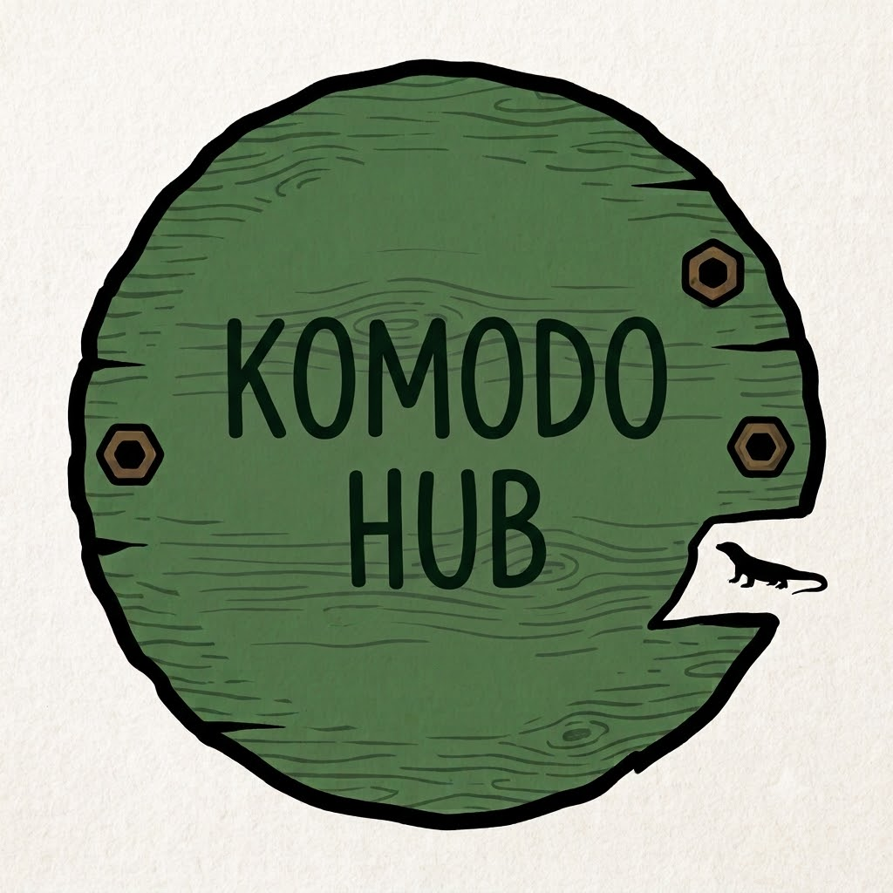
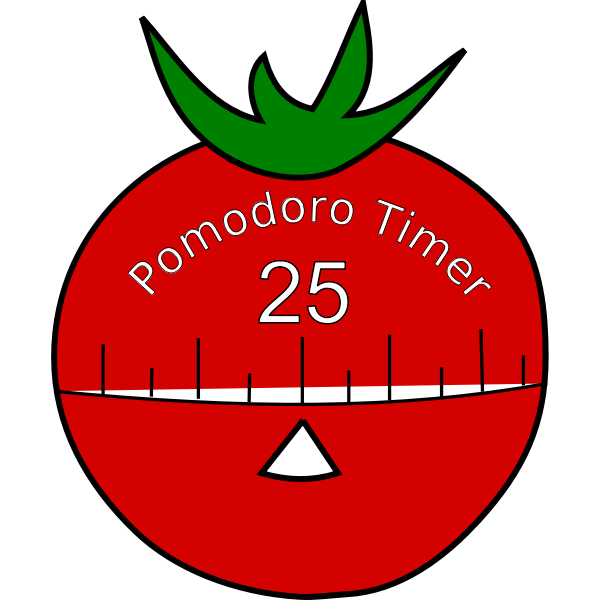

Red Robbin Smart Security System
A smart secuity system that delivers reliable alerts and device management across a secure network, developed collaboratively in a university group project.
Tech Stack: Python, MQTT protocol, MySQL
GitHub repositoryThese examples highlight my approach to practical development, teamwork, and technical execution.
A smart secuity system that delivers reliable alerts and device management across a secure network, developed collaboratively in a university group project.
Tech Stack: Python, MQTT protocol, MySQL
GitHub repository
A mobile application for students and communities to report on endangered species, developed collaboratively in a university group project.
Tech Stack: Python, Kivy, MySQL
GitHub repositoryA high-throughput task distribution system that decouples heavy background jobs and streams real-time execution status to a frontend dashboard.
Tech Stack: Python, FastAPI, Redis, SQLite, WebSocket, HTML/CSS
GitHub repository
A timer application to help manage time effectively during study sessions using the Pomodoro technique.
Tech Stack: Python, Tkinter
GitHub repository
A classic snake game implemented with smooth controls and score tracking.
Tech Stack: Python, Turtle
GitHub repositoryA classic ping pong game implemented with smooth controls and score tracking.
Tech Stack: Python, Turtle
GitHub repository